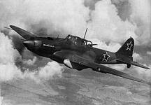

Тяжелый штурмовик Ил-2 был спроектирован КБ Ильюшина и запущен в производство незадолго до начала Великой Отечественной войны. С первых дней войны новый штурмовик показал высокую эффективность в боях против вражеской пехоты и легкой бронетехники, но и выявил ряд недостатков. Так, со средними и тяжелыми танками самолет справлялся значительно хуже, так как против них не было выработано тактики применения подобного типа самолетов. Пушечное вооружение было эффективно лишь против техники с толщиной брони не более 15мм. Средние танки можно было поразить удачным залпом РС-82, а против тяжелой бронетехники против ника эффективными были только бомбы ФАБ-100. Последние на начальном этапе войны использовались со взрывателем с большим замедлением, что позволяло технике противника удалиться на безопасное расстояние до того, как бомба успеет детонировать. Позднее взрыватели бомб изменили на мгновенные, что потребовало изменения тактики применения Ил-2, но значительно повысило их эффективность против средней и тяжелой бронетехники. Несмотря на недостатки, данное конструкторами прозвище "Летающий танк" самолет заслужил по праву, став самым эффективным оружием против техники и пехоты среди всей авиации Советских ВВС. Среди наземных войск Вермахта самолет также получил прозвище Schlachter (мясорубка), что основывалось на игре слов с Schlachtflugzeug, обозначавшем на немецком языке штурмовики. Немецкие пилоты истребителей прозвали самолет Betonflugzeug (бетонный самолет) за высокую живучесть машины.